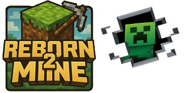
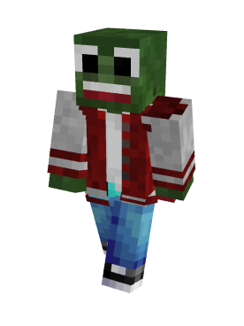
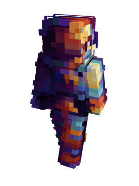

Fan de terraforming et de construction en général, l’improvisation et le chaos défini son approche du jeu.
Décides enfin en 2026, a faire un vrai projet cohérent avec Litematica (ce miracle)
Va-t-il réussir enfin à finir quelque chose ? Bonne question !

Un des 2 fondateurs de Born2Mine, il est la vision d’un projet qui dure à présent depuis plus de 13 ans.
D’expérience, a fait parti des plus grandes teams de constructions, des serveurs les plus fous du monde, et a présent, il est à la retraite sur Reborn2Mine,
où il fini (ou pas) le jeu à son rythme, en paix.
Son projet en cours est d’avoir un monopole économique TOTAL sur un monde où on est que 4 (dont une mendiante)!
Est ce que cela à vraiment un sens?
Va-t-il y arriver? ET enfin claquer tout l’argent au CASINO du Spawn???